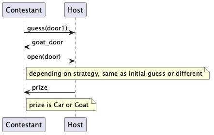

The Monty Hall problem¶
One reason to model systems is to gain insight into and predict complex behavior. Ideally, the components of the system are reasonably easy to understand in isolation, while assembling them together results in surprising behavior that can give insight or support for a theory about the whole system.
The Monty Hall problem is usually defined as follows:
Suppose you’re on a game show, and you’re given the choice of three doors: Behind one door is a car; behind the others, goats. You pick a door, say No. 1, and the host, who knows what’s behind the doors, opens another door, say No. 3, which has a goat. He then says to you, “Do you want to pick door No. 2?” Is it to your advantage to switch your choice?
The “intuitive” assumption from many people would be that changing one’s guess cannot make a difference to the outcome. But is this true? Let us model this system and find out!
The code for this example is at https://github.com/abstools/absexamples/tree/master/collaboratory/examples/monty-hall/
Modeling the participants¶
Each round in the game is played between a participant and a host. First the guest submits an initial guess to the host. The host answers by ruling out one of the two other doors as being the correct one. Then, the participant decides on which door to open according to their strategy: either decide to open the original door, or switching to the other closed door. The following sequence diagram illustrates the interaction:

Interaction between participant and game show host¶
The host¶
For simplicity, we model the three doors as the numbers 0..2. The
host has two methods: guess, which takes a door and returns another
door that is definitely the wrong answer (the host is trustworthy). The
method open takes a door and returns its content: Car or
Goat.
data Prize = Car | Goat;
interface Host {
Int guess(Int door_guess);
Prize open(Int door);
}
class Host implements Host {
Int winning_door = random(3); // 0..2
List<Int> losing_doors = without(list[0, 1, 2], winning_door);
Int guess(Int door_guess) {
return (when door_guess == winning_door
then nth(losing_doors, random(2))
else head(without(losing_doors, door_guess)));
}
Prize open(Int door) {
return when door == winning_door then Car else Goat;
}
}
The contestants¶
The Contestants “drive” the interaction. The method play implements
the sequence of interactions shown above: the contestant picks a number,
submits it to the host, receives information about another door, and
finally asks the host to open the chosen door. Each contestant keeps
track of the number of rounds and wins they have played.
The following code shows the contestant that switches their guess after shown the incorrect door; the non-switching contestant is similar except for one line:
interface Contestant {
Unit play(Host host);
Unit printSummary();
}
class SwitchingContestant implements Contestant {
Int nPlays = 0;
Int nWins = 0;
Unit play(Host host) {
Int pick_door = random(3);
Int goat_door = await host!guess(pick_door);
Int final_door = head(without(without(list[0, 1, 2], pick_door), goat_door));
Prize prize = await host!open(final_door);
nPlays = nPlays + 1;
if (prize == Car) nWins = nWins + 1;
}
Unit printSummary() {
println(`I always switched, won $nWins$ out of $nPlays$ rounds.`);
}
}
Running the example¶
Since we want to investigate whether the results for switching and non-switching strategies are different, we create one participant of each type and let them play against 1000 hosts:
{
Int nRounds = 1000;
Contestant swc = new SwitchingContestant();
Contestant nsc = new NonSwitchingContestant();
while (nRounds > 0) {
nRounds = nRounds - 1;
Host host = new Host();
await swc!play(host);
await nsc!play(host);
}
swc.printSummary();
nsc.printSummary();
}
Running the model produces output similar to the following:
I always switched, won 628 out of 1000 rounds.
I never switched, won 333 out of 1000 rounds.
As we see, the intuitive expectation about the outcome is not supported by the simulation! The composition of simple components with understandable behavior can indeed lead to observation of surprising behavior, which is the goal of modeling a system.